This second set goes further than just placing things in the frame. Several are about relationships, like light against dark or near against far. Others are about the light you choose and the moment you wait for. Mix them freely with the first twelve.
Technique 13
Rule of odds
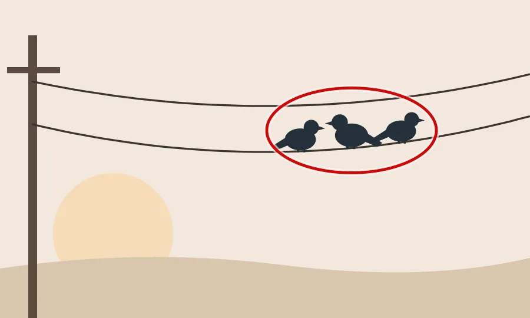
Groups of three or five usually look more natural than groups of two or four. With an even number the eye pairs things up and the picture can feel static. With an odd number there’s always a middle one, so the eye keeps moving.
When you arrange things yourself, like fruit on a table or stones on a beach, try three. With people or animals, wait for an odd group. It’s only a starting point, though. Two people looking at each other is a classic picture in its own right.
The idea helps with details too. Three flowers in a vase usually look better than two or four, and three people in a street scene give the eye a natural triangle to follow. With bigger numbers it stops mattering. Nobody counts the birds in a flock of twenty.
Technique 14
S-curve
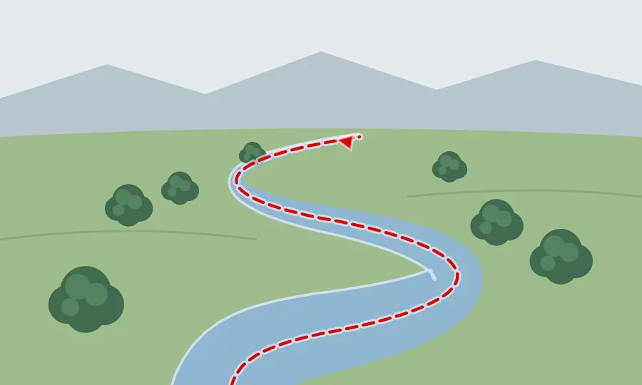
An S-shaped line is one of the most graceful ways to lead the eye. A winding river, a country road, a path through a park or the curve of a shoreline carries the viewer gently from the foreground into the distance, showing the scene a bit at a time.
S-curves are easiest to see from higher up, looking down along the line. A longer lens squeezes the bends together and makes the curve stronger. Start it near a bottom corner and let it fade away into the distance.
Smaller S-curves are everywhere once you start looking. The neck of a swan, or a road curling down a hillside seen from a bus window. In a portrait, a relaxed pose often forms a gentle S through the body. That’s one reason it looks more natural than standing stiffly upright.
Technique 15
Golden triangle
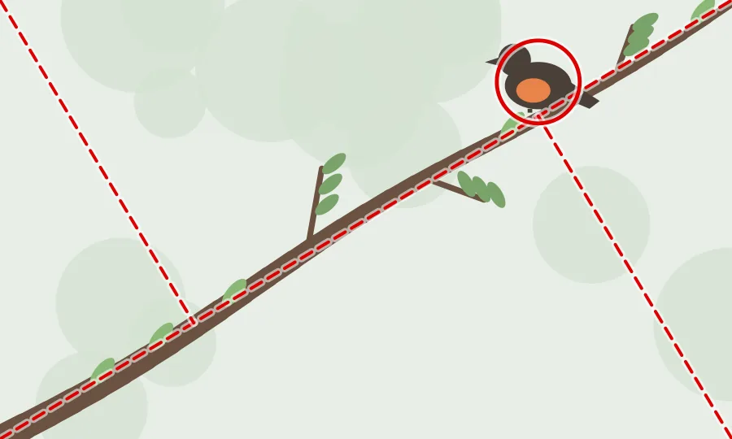
The golden triangle splits the frame with one diagonal from corner to corner, then two shorter lines from the other corners that meet the diagonal at right angles. You end up with triangles of different sizes and two strong points where the lines meet.
It suits pictures with a strong diagonal, like a branch or a slope. Lay the main line along the long diagonal and put the subject on one of the meeting points. As with the spiral, the crop overlay in an editing program is the easiest way to learn it.
It’s especially useful when a picture has two subjects. Put one on each meeting point and the diagonal links them, like a bird on a branch with the sun in the opposite corner. If the scene has no strong diagonal at all, this guide isn’t the right tool, and the rule of thirds will serve you better.
Technique 16
Visual balance
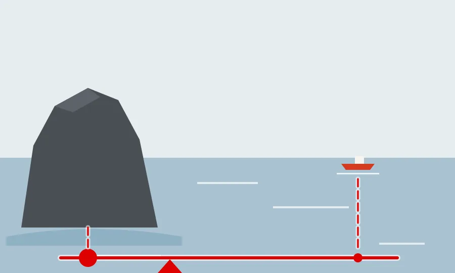
Balance doesn’t have to mean symmetry. Everything in a picture has visual weight. Big, dark, bright or colourful things feel heavy. Small, pale things feel light. Like kids on a seesaw, a big shape near the middle can be balanced by something small but striking further out.
A big dark rock on one side and a little red boat on the other is the classic example. If a picture feels lopsided, look for something on the light side that could carry more weight. Or move until it does.
Colour carries a lot of weight. A small patch of red can hold its own against a large grey area. Sharpness does too, because the eye goes to the sharpest part of a picture first. Use that when a scene feels off balance. Sometimes moving the focus, or waiting for a bright jacket to walk past, is all it takes.
Technique 17
Sense of scale
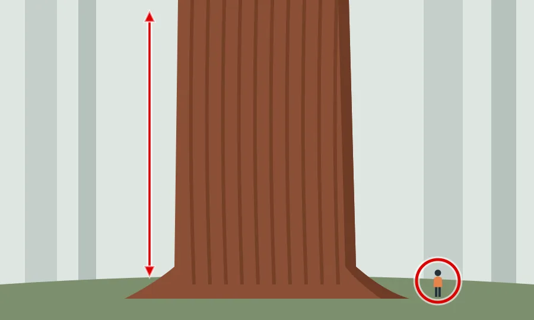
Mountains and waterfalls often look oddly ordinary in photos, because nothing tells the viewer how big they are. Put something of known size in the frame, usually a person, and the real scale shows at once.
Keep the person small, but put them where they’ll be noticed, ideally in a contrasting colour. A red or orange jacket against green and grey stands out even when the figure is tiny. Cars and boats do the same job.
Scale can work the other way round. A tiny subject looks huge when there’s nothing to compare it with, which is how a patch of moss becomes a forest and a puddle becomes a lake. Shoot from low down and keep familiar objects out of the frame. The viewer’s imagination does the rest.
Technique 18
Silhouette
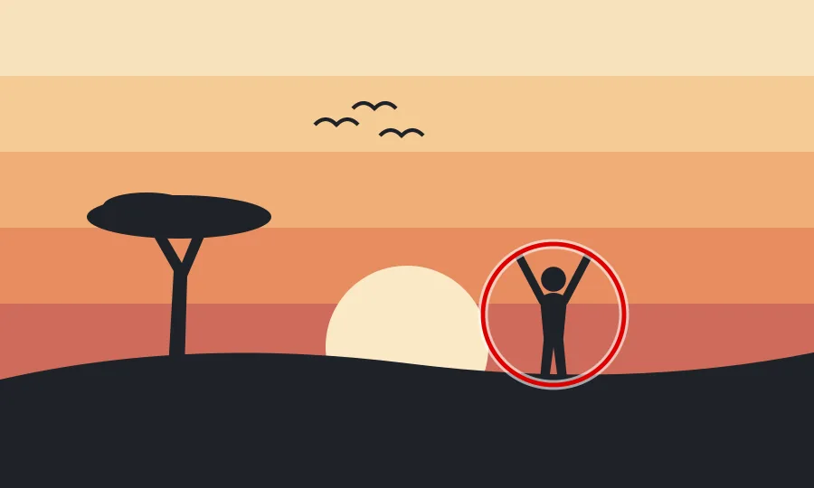
A silhouette shows the subject as a pure black shape against a bright background, usually the sky at sunrise or sunset. The detail disappears, so the outline has to tell the whole story. Pick subjects with clear, recognisable shapes and keep them apart from each other.
Expose for the bright sky, not the subject. Otherwise the camera brightens the subject and washes out the sky. Metering on the sky next to the sun usually works, or you can dial in some negative exposure compensation. Switch the flash off too, because it would light the subject and spoil the effect.
Silhouettes are simplest against an evenly bright background. A clear sky after sunset is ideal, and so is a bright window seen from inside a dark room. Look for profiles. A face seen from the side has a clear outline, while a face seen from the front turns into a featureless shape. Hats and bicycles read well too.
Technique 19
Colour contrast
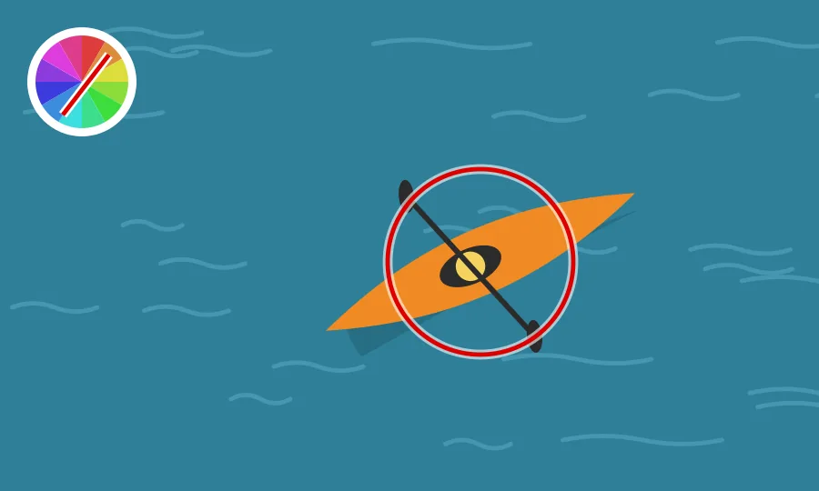
Colours opposite each other on the colour wheel are called complementary. Orange and blue, say, or red and green. Side by side they make each other look stronger, so a subject in one colour jumps out from a background in the other.
Look for an orange kayak on blue water or a red door in a green street. Even a small accent can lift a muted scene. The blue hour gives you orange against blue for free on every clear evening, with warm street lights under a deep blue sky.
Colour contrast doesn’t have to be loud. Muted versions work, like a dusty orange wall against a pale blue sky. Warm and cool tones side by side create contrast even when they aren’t true opposites. If a scene feels flat, ask whether one colour could be stronger, and look for the spot where two colours meet. Chapter 6 goes further into colour.
Technique 20
Light and shadow
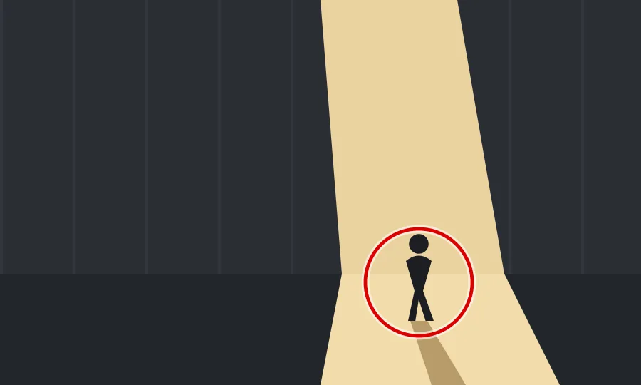
Light is the real subject of every photograph. When strong, directional light falls into a dark space, you get pools of brightness and deep shadow. Put your subject in the light and let the rest go dark. That gives you drama and focus, an effect painters call chiaroscuro.
Find the patch of light first, then wait for someone to step into it. Expose for the bright part so it keeps its detail, and let the shadows go dark. Low sun works best, and so does light coming through a window.
Shadows can be the subject as well. A long shadow stretching across a pavement can say more about a person than the person does. Early morning and late afternoon give the longest ones. Underexpose a little to keep the bright areas rich, and the shadow shapes turn into strong graphic elements of their own.
Technique 21
Selective focus
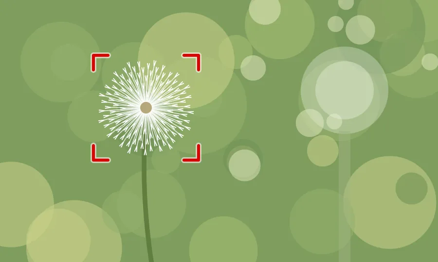
Selective focus keeps only your subject sharp while the background, and sometimes the foreground, melts into a soft blur. It lifts the subject off a busy background and gives a pleasing, almost three-dimensional look.
Open the aperture wide, to a small f-number like f/1.8 or f/2.8, and use a longer focal length if you have one. Then get close to the subject and keep the background far away. Focus carefully. With very shallow depth of field, a few centimetres decide whether the eyes or the nose end up sharp.
Phones fake this effect with a portrait mode, and it can look convincing. With a camera the real thing comes from the optics, so it’s worth learning which apertures and distances give you the look you like. In portraits, focus on the nearest eye. If that eye is sharp, viewers will accept a lot of blur everywhere else.
Technique 22
Juxtaposition
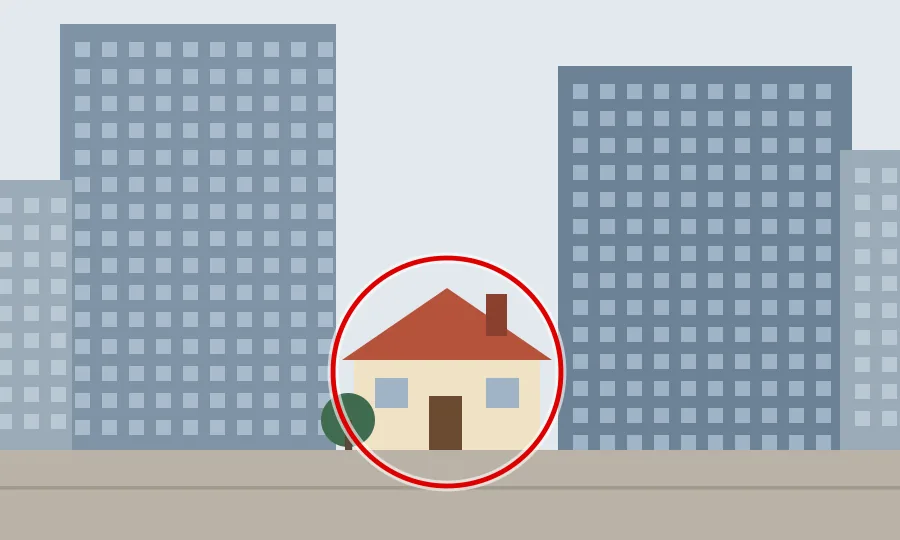
Juxtaposition puts two contrasting things side by side so each comments on the other. Old and new, say, or nature and the city. The meaning comes from the contrast, not from either one alone.
A little old cottage squeezed between glass towers says something about a changing city that neither building could say alone. Look for pairs like that in streets and markets. You’ll often need to move around until both line up in the frame.
Humour often comes from juxtaposition. A sign that says one thing while the scene shows another, or a dog that looks a lot like its owner, makes people smile because of the pairing. Keep your camera ready in busy places and watch for these small coincidences. They don’t last long.
Technique 23
Eye lines
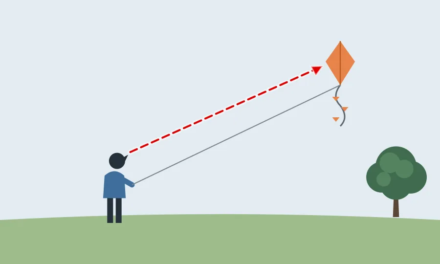
People in a photo lead our eyes just like lines do. Viewers follow where a person is looking without thinking about it, so a gaze becomes an invisible line joining that person to something else in the frame.
Use it on purpose. A child looking up at a kite works, and so do two people looking at each other. Make sure whatever they’re looking at is in the picture, or that their gaze leads into open space and not straight out of the frame. When someone looks into the camera, the eye line connects them with the viewer instead.
Eye lines also reach out to the viewer. Someone looking slightly past the camera seems thoughtful, while someone looking straight into the lens seems direct and confident. In a group, watch where everyone is looking. If all eyes point at one spot, that spot becomes the centre of the picture, however small it is.
Technique 24
Low horizon
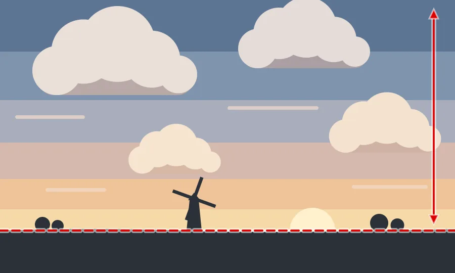
Where you put the horizon decides what the picture is about. When the sky’s the star, with dramatic clouds or a fiery sunset, drop the horizon near the bottom and give the sky most of the frame. When the land or water is more interesting, raise the horizon until the sky is a thin strip, or leave it out altogether.
Keep it level. Most cameras have a level indicator for exactly this. A horizon straight through the middle often makes a picture feel undecided, unless you’re shooting a reflection.
A high horizon suits patterns on the ground, like ploughed fields or a busy beach seen from above. A very low one suits big weather and night skies. Decide before you shoot what the picture is about. Then place the horizon to match, and commit to it.
Putting it all together
Very few strong photographs rely on one technique. A classic landscape might have a low horizon, an S-curve coming in from a corner, layers of depth and warm evening light, all at once. A street photo might use light and shadow, with a figure on a third and room to move in front of them. The techniques help each other. A leading line works better when it ends on a subject you’ve placed with care.
When a scene catches your eye, stop and ask what drew you to it. A shape, the light, a colour, a face? Then pick the techniques that make that one thing stronger, and get rid of anything competing with it.
Exercises
Exercises 13–24. Tick each one off when you’ve tried it. Your ticks stay on this phone or computer.
- 13
Rule of odds
Arrange two, then three, four and five similar objects, like apples or stones, and photograph each group from the same spot. Which numbers feel most natural? Then go looking for groups of three out in the street.
- 14
S-curve
Find a winding road or river and photograph it from the highest point you can reach. Try a wide focal length and a longer one, and see which makes the curve stronger.
- 15
Golden triangle
Find a strong diagonal, like a branch or a leaning post. Lay it along the corner-to-corner diagonal and put a subject where one of the short lines meets it. Check with the crop overlay afterwards.
- 16
Visual balance
Find a big, heavy element, such as a building or a dark tree, and a small bright one, such as a person or a red sign. Move until the small one balances the big one from the opposite side of the frame.
- 17
Sense of scale
Photograph something huge twice, a tree or a cliff, say. Once on its own and once with a person next to it. A friend in a bright jacket helps.
- 18
Silhouette
At sunrise or sunset, put a person or a tree against the bright sky. Meter on the sky, or dial in −1 to −2 EV, so the subject turns black. Make sure the outline is clear and stands apart from everything else.
- 19
Colour contrast
Go on a colour hunt for complementary pairs, like orange and blue or red and green. Photograph five examples. Add one more where a small accent of colour lifts an otherwise dull scene.
- 20
Light and shadow
Find a patch of strong light in a dark area. A gap between buildings works, or sun through trees. Set the exposure for the light and wait for someone to step into it.
- 21
Selective focus
Use your widest aperture, the smallest f-number, and a longer focal length. Photograph a flower or a person with the background as far away as you can get it. Repeat at f/11 and compare the backgrounds.
- 22
Juxtaposition
Look for pairs that tell a story together. Old and new, big and small, nature and concrete, serious and funny. Find a viewpoint where both show clearly in one frame.
- 23
Eye lines
Photograph someone looking at something, a book or a view, and include what they’re looking at. Then photograph them looking out of the frame, and compare.
- 24
Low horizon
On a day with a dramatic sky, shoot the same view with the horizon near the bottom, through the middle and near the top. Do it again on a dull day and see which placement works best then.
Photography Handbook, © 2026 Samskara Photo Club. Text and illustrations are licensed under CC BY-NC-SA 4.0. You may share and adapt them for non-commercial use if you credit the club and share your version under the same licence. Commercial use needs the club’s permission. The club logo is not covered by the licence.